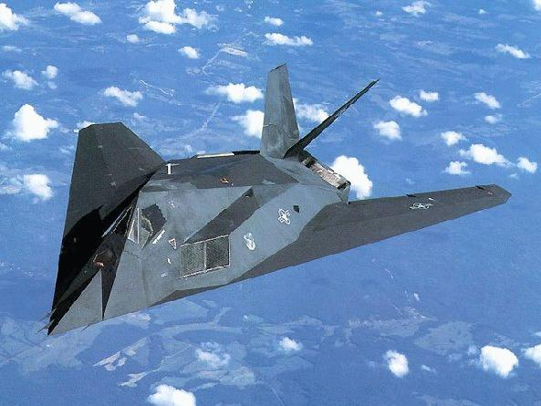
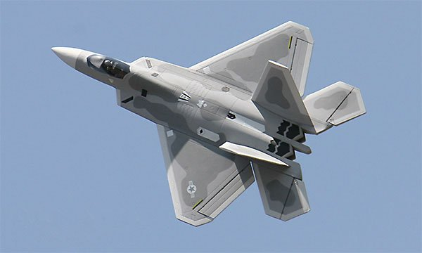
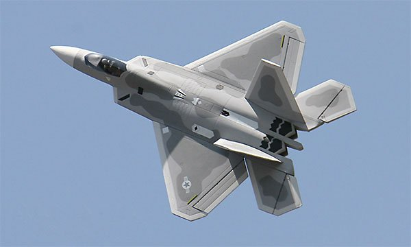

【空军】【海军】雷达与隐身技术之间的矛盾关系（上）
2014-08-05 20:16:00
原文网址：https://blog.udn.com/MengyuanWang/108908624
我曾在前文《一架F22戦機完胜中共空軍？ 》裡簡單提到了現代隱身飛機與反隱身雷達之間的發展兢賽，在本文我將補充一些細節。
一般討論雷達對飛機的探測，用的單位是截面積（σ）。以Su-27為例，報章雜誌上常稱其正面的雷達截面積為5平方公尺，這是什麼意思呢？在下面的簡單示意圖裡，我們可以看出雷達的波束是錐狀的，這個錐形的截面通常是圓形，而這圓形截面的大小（C）會與距離（r）的平方成正比，也就是C=s×r^2，這裡的s是錐形頂端的三維空間角。如果我們做以下的兩個假設：1）雷達波的功率（P）平均分配在這圓形截面上；2）目標攔截了一部分（σ/C）雷達波並將之向四面八方均勻散射，那麼反射波的總功率就是P×σ/C，而既然四面八方的圓周總面積是4πr^2，則雷達接收天線（假設其有效面積Effective Area=A）將收到其中的A/4πr^2，所以雷達收到的反射波功率是兩者的乘積，即P×σ×A/(4πr^2C)=P×σ×A/(4π×s×r^4)。所以雷達的探測能力與發射功率P成正比，與波束寛度s成反比，與雷達接收靈敏度A成正比，與距離的四次方成反比，而與σ成正比。這裡的σ就是一般所謂的雷達截面積。 
既然雷達截面積σ並不是真正的截面積，只是代表雷達波被散射回原方向的一個等效變數，那麼不同的形狀就會造成不同的σ。可是原本雷達截面積只能用測量飛機模型對雷達波的反射來決定，對設計師來講，要如何減低σ這個問題是千頭萬緒，無從著手。但是在1964年，一個默默無聞的蘇聯數學家Pyotr Ufimtsev向一個很不重要的大學的內部學術期刊Journal of Moscow Institute of Radio Engineering投了一篇論文，叫《Method of Edge Waves in The Physical Theory of Diffraction》（《如何計算邊界波的繞射》），給出了從飛機表面形狀來計算雷達截面積的方程式。蘇聯的保密審查員有外國的月亮比較圓的偏見，以為本國的基礎研究成果沒什麼了不起的，就讓那篇論文發表了，而且還可以寄到美國。十年後，洛克希德（Lockheed）的一名工程師在圖書館裡偶然翻到這篇論文，認出它是稀世珍寶，由此開發出了世界第一架隱身飛機，也就是F117。 
因為40年前的電腦還很原始，F117的設計師們不能探索太多不同的形狀（連曲面都不能算，只好用平面拼出一個好似刀削斧切出的形狀），所以只好專注在隱身性能上，結果氣動效率很低，超音速是不可能的了，只能做為攻撃機（Ground Attack Aircraft）使用。到了1980年代，美國的隱身技術進步了，才做出隱身和氣動性能兼顧的B2轟炸機；到了1990年代，才做出世界第一架超音速隱身飛機，也就是F22。 B2和F22都號稱將雷達截面積降低了四個數量級，也就是雷達截面積降到了類似其大小的非隱身軍機的萬分之一，所以敵方雷達對它們的探測距離就應該縮減為十分之一（因為雷達的探測能力與σ成正比，而與距離的四次方成反比）。以台灣的F16裝備的AN/APG-66雷達為例，其對戦鬥機的最大探測距離為140公里，如果降到十分之一，也就是14公里，那麼F22自然可以輕易地在80公里外發射AIM-120中程空對空飛彈將它撃落，自己則輕鬆掉頭飛走。
B2和F22都號稱將雷達截面積降低了四個數量級，也就是雷達截面積降到了類似其大小的非隱身軍機的萬分之一，所以敵方雷達對它們的探測距離就應該縮減為十分之一（因為雷達的探測能力與σ成正比，而與距離的四次方成反比）。以台灣的F16裝備的AN/APG-66雷達為例，其對戦鬥機的最大探測距離為140公里，如果降到十分之一，也就是14公里，那麼F22自然可以輕易地在80公里外發射AIM-120中程空對空飛彈將它撃落，自己則輕鬆掉頭飛走。
可是隱身技術真有這麼神嗎？蘋果每一代的iPhone都號稱比前一代快三到四倍，你相信嗎？其實新的iPhone在幾百個測試裡只要有一個加快了三四倍，蘋果就會高高興興地用這個數據，那怕用戶的實際經験是只快了30%。要是所有的測試都快不到三倍也不要緊，蘋果把作業系統稍改一下，讓舊的iPhone慢下去，三倍的比率自然就出來了。隱身技術也有點像iPhone：有些人認為所謂的四個數量級是作弊吹牛出來的（這涉及高度機密的技術資料，結論無法確定）；就算沒有誇大，這個數據的確是只有在最理想的條件下才可能達成。
有哪些條件呢？雷達波並不是只有一種，做為電磁波，其最重要的特症就是有不同的頻率（f）；由於電磁波在空氣中的速度基本上等同於真空光速（c=3×10^8公尺/秒），其波長（λ）便自然與頻率成反比，即c=f×λ。一般來說，軍用雷達波依頻率/波長分為以下幾個波段（UHF在雷達行業裡的定義和通訊用的略有不同）：
波段 頻率 波長
HF 0.003-0.03 GHz 10-100公尺
VHF 0.03-0.3 GHz 1-10公尺
UHF 0.3-1 GHz 30-100 公分
L Band 1-2 GHz 15-30 公分
S Band 2-4 GHz 7.5-15 公分
C Band 4-8 GHz 3.75-7.5公分
X Band 8-12 GHz 2.5-3.75 公分
Ku Band 12-18 GHz 1.7-2.5 公分
最早的對空雷達是1936年英國的AMES（Air Ministry Experimental Station，空軍部實験站）Type 1，用的是25MHz/12公尺的HF（High Frequency，高頻）波段。但是雷達設計師們馬上就開始研究頻率更高的雷達，到二次大戦初期，絶大部分的雷達已經改用VHF（Very High Frequency，甚高頻）波段；這主要是因為收發天線的尺寸都必須與半波長類似，波長越小，天線也可以做得越小（這對動輒有上千單元的現代陣列天線尤其重要）。因為電視廣播用的也是VHF，台灣人應該對其天線很熟悉，它是魚骨形，學名叫“八木天線”（Yagi Antenna），因為它是在1926年由東京帝國大學的兩名教授八木秀次和宇田太郞所發明的。日本人也相信外國的月亮比較圓，所以根本不知道這發明有多重要；到1928年。八木教授在美國的學術會議給了演說，八木天線立刻傳徧英美。日本軍方要到1942年攻下了新加坡，才第一次看到這種天線，在雷達的說明書裡讀到Yagi Antenna，不明就裡，還特別把被俘的英軍雷達技師從戦俘營裡找了出來詢問，這才知道Yagi是“八木”的英文翻譯。
【待續】
【後註一，2022/12/14】剛剛注意到一則有關Patriot防空導彈系統的（例如《The Americans Are Evil》；這裏他的大結論“The Americans Are Evil”是對的，但軍事方面的分析是錯的）。其實這是非專業人士的誤讀；我原本以爲會有讀者來發問，等了幾天還是沒有，乾脆在後註欄簡單解釋一下。
要做出正確的解讀，我們須要先考慮另外兩件事實：首先，Biden在將近半年前就已經派遣82空降師的一個旅到Romania，這次是單純的一比一換防；其次，雖然82和101師都是二戰功勛部隊，並且沿用“空降”“Airborne”這個名字至今，但在戰後漫長的精簡、現代化過程中，其組織和訓練早已分歧化，獲得了不同的任務和特長。其中只有82師還算真正的傳統空降部隊，其官兵必須有傘降的能力和經驗；101師實際上轉化為“空中騎兵”（或稱“空中突擊”“Air Assault”，是現代版的Dragoon龍騎兵），靠著運輸直升機做機動。所以在戰術層面，這兩個師並不具有100%的替換性，只有在戰略層面，才同屬美國陸軍唯二的師級輕步兵單位，沒有什麽重型機械化裝備，可以相對廉價快速地緊急長途部署到戰略前緣。然而正因如此，他們非常不適合單獨對抗現代化多兵種協同的重裝敵軍，頂多只能做幾天或幾周的遲滯作戰。
綜合前述的分析，我們可以簡單看出，美國NeoCon或許有計劃要直接介入戰事，但部署101空降師這件事與其沒有任何因果關係，甚至不算是升級威脅。本周真正值得關注的俄烏戰爭新聞，是烏克蘭的髒彈計劃：我在兩三個月前就報導過烏方正在做準備，現在俄方顯然得到新情報，認爲已經進展到即將施行的地步，所以必須抖出來，警告整個西方政壇，希望智商正常的那一部分人足以制衡NeoCon。
4 条留言
了。
看到一段材料： * Unlike most RWRs which can only give azimuth data, the F-22 has the most advanced passive radar/RWR (ALR-94) which can provide both azimuth & elevation data accurately, and thus, track enemy aircraft passively. It can also cue its active radar (APG-77) into a confined narrow beam (2°x2°) and the APG-77 can get all the necessary data for a firing solution using a single beam.
* Under certain cases, the F-22’s RWR (ALR-94) may provide almost all the necessary information to launch AIM-120D – virtually making it an anti-radiation missile!
* 我有个疑问，按照理论上来讲，发出雷达波的一方需要接受到反射的回波才能定位目标，而被侦测方只需要接收到探测波就可以定位辐射源，那岂不是后者总是能在辐射源定位它之前定位辐射源吗（因为回波强度肯定远低于探测波）（如果双方电子水平相当）现实中情况是这样吗？
另外，如果己方有多架飞机接受到了同一个辐射源的探测波，通过交换数据就可以大大提高对辐射源的定位精度（三角定位原理）现实中有这种应用吗？
被动探测一般无法测距，也就不能用在火控上（除非使用反辐射飞弹，但是一般战机的雷达可以开开关关，运动速度又快，不适合用反辐射飞弹攻击）。
多架飞机用被动探测的讯号，综合起来对敌机定位，理论上是可行的，实际上有个大问题：新式的AESA雷达，波束很窄很灵活，几乎没有副瓣，也就不会同时让多个目标接收到信号。当然用被动接收来吊打老一代的对手，还是有价值的。
防空驱逐舰（如052D）的主阵列用的是S波段，反隐身能力相对弱得多。不过它的波束窄、功率高、增益大，而且一旦警戒雷达指出可疑的目标，可以集中功率搜索那个方向，所以仍然可以在相当的距离外探测到隐身目标。
在现阶段的武器竞赛，200公里是一个理想的拦截半径。052D的346A雷达应该有能力在这个距离探测到并且攻击F-35。F-22的雷达截面又小了一个数量级，所以探测距离缩短为0.1的四次方根~=0.6倍，亦即120公里左右。如果把AESA的单元数加倍，亦即把雷达直径从4.5米增加到6米，那么就足以抵消F-22的隐身优势，把探测距离又推到200公里以上。
对B-2和B-21这样的大型飞翼，VHF和S波段都无能为力。必须依赖陆基的HF阵列天波雷达做预警，但是这种雷达误差更大，而且杂讯很多。
// 美军刚研发完成的隐身LRASM（长程反舰飞弹），目前由B-1发射，但是将来必然是准备装备B-21隐身飞翼轰炸机，正是专门设计来克制共军的新锐防空舰。//
能否请七公谈谈中共针对这样的状况有无反制的方法呢? 谢谢!
如果没有巡逻的战机在附近，那么就只好通报防空舰，让他们准备用上近防系统了。这些系统都是全自动的，但是有心理准备还是好些。
LRASM的射程极长，远在预警机探测距离之外。美国人寧可选择飞得慢的，也要打得远，就是为了避免轰炸机被拦截。别忘了，这些美军的隐身轰炸机比共军的防空驱逐舰还贵。
这并不代表只靠隐身轰炸机就可以完虐航母舰队，因为他们还是需要实时的侦察定位，才能在600多公里（射程是机密，这是我的估计）外发射LRASM。所以双方都会想办法先打掉对方的侦察卫星、无人机、预警机等等，最终还是整个体系的对抗。
另外有个关于f22被动探测能力的资料分享给您，似乎是说可以确定三维坐标http://www.f-16.net/forum/viewtopic.php?t=9268
那是一篇F-22的公关文章，所以故意说得模棱两可，基本上是美国式忽悠。